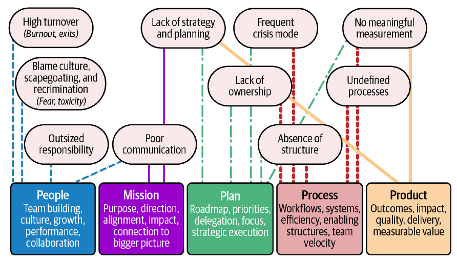

Chapter 2 · pp. 13–34
Understanding Your Role
Engineering Leadership: The Hard Parts, First Edition
Before leading anyone you need to be clear on your own job, and in chaotic environments nobody hands you a usable description of it. The chapter builds one around five pillars — people, mission, plan, process and product — mapping each to the symptoms of chaos from Chapter 1 (Figure 2-1, Table 2-1). Along the way it warns against retreating into comfortable technical work, argues that leaders must be "generalists with range" and that action beats inaction, and gives an exercise per pillar, illustrated with April, a new leader of PixelCurl's StudioOps team. The result is a personal, living role description (pp. 13–34).
The chapter’s own outline (from the book’s table of contents)
- What’s Your Job, Exactly? — p. 13
- The Five Pillars of Engineering Leadership — p. 15
- Boss, Where’s the Roadmap? — p. 15
- Don’t Retreat to the Comfortable — p. 16
- Engineering Leadership Is About Being a “Generalist with Range” — p. 16
- Action Beats Inaction Every Time — p. 17
- Role Description: A Do-It-Yourself Blueprint — p. 17
- People: It All Starts with Your Team — p. 18
- What’s Your Starting Point? — p. 18
- What’s Your Mission? — p. 19
- What Tools Do You Need to Get There? — p. 19
- Mission: You’ve Got a Crew; Now You Need a Place to Go — p. 22
- Where to Start — p. 22
- Getting Your Team on Board — p. 23
- Turn the Mission into Action — p. 23
- Plan: You Know Where to Go; Now Chart the Course — p. 25
- Build with Your Partners — p. 25
- Know What to Prioritize — p. 25
- Turn Strategy into Action — p. 26
- Adjust, but Stay Focused — p. 26
- Process: The System That Keeps Things Moving — p. 28
- Keep It Lean, but Effective — p. 28
- Make Process a Team Effort — p. 29
- Adjust As You Go — p. 29
- Product: What Are We Actually Delivering? — p. 31
- Know What Success Looks Like — p. 31
- Balance Quality with Speed — p. 32
- Outcomes Aren’t Always Features — p. 32
- Conclusion: Pulling It All Together — p. 34
From the book
Introduction
Your job in chaos is to create clarity, build stability and keep the team anchored: set direction when none exists and connect engineers to the bigger picture, even when that picture is blurry. Treat this chapter as onboarding to the role (p. 13).
From the book
What’s Your Job, Exactly?
You'll wear a thousand hats — people leader, technical guide, strategist, product manager, firefighter, sometimes therapist — and the challenge is knowing which to wear when (p. 13). Your role is the glue, and your team will mirror you (p. 14). The framework is five pillars, each addressing symptoms of chaos from Chapter 1:


| Table 2-1. Leadership intervention framework (p. 14) | Intervention approach |
|---|---|
| People | Addresses high turnover, blame culture, outsized responsibility and poor communication |
| Mission | Tackles lack of strategy, poor communication and disconnection from purpose |
| Plan | Resolves lack of strategy, ownership issues, crisis mode, absence of structure, no measurement |
| Process | Fixes undefined processes, absence of structure, lack of ownership, frequent crises and no measurement |
| Product | Establishes meaningful measurement, outcome focus, quality standards, delivered value and strategic alignment |
What’s Your Job, Exactly?
The Five Pillars of Engineering Leadership
| Pillar | Your job (p. 15) |
|---|---|
| People | Build a culture, support growth, make engineers work as a unit — not just manage headcount |
| Mission | The "why": connect what engineers do to the company's goals and their impact |
| Plan | Roadmap, priorities and delegation — direction and focus, not dictated detail |
| Process | Support engineers rather than bog them down; ineffective processes destroy progress |
| Product | Deliver outcomes that matter, with measurable impact — feature, fix or internal tool |
What’s Your Job, Exactly?
Boss, Where’s the Roadmap?
Most leaders get a vague mandate to "lead the team"; even a detailed job description wouldn't survive the first month, because responsibilities shift as the organization grows. You need a living document of your responsibilities and how you'll fulfil them (pp. 15–16).
What’s Your Job, Exactly?
Don’t Retreat to the Comfortable
When chaos arrives the temptation is to freeze or dive back into refactoring and bug fixing. Constantly doing individual contributors' work means "you're not leading; you're hiding." Your value is how well you empower the team; leading engineers is not a promotion but a new job (p. 16).
What’s Your Job, Exactly?
Engineering Leadership Is About Being a “Generalist with Range”
Leaders need a little knowledge about many things and the ability to move between them — the authors cite Robert A. Heinlein's "Specialization is for insects" (Time Enough for Love, 1973). It's no excuse for shallow thinking: know how everything fits together and when to go deep — context switching with purpose (p. 16).
What’s Your Job, Exactly?
Action Beats Inaction Every Time
The risk in chaos isn't doing the wrong thing but doing nothing, waiting for clarity that may never come. Decide with incomplete information, adapt and iterate; taking action when nobody else will sets you apart (p. 17).
What’s Your Job, Exactly?
Role Description: A Do-It-Yourself Blueprint
Documenting your responsibilities is the first "hard part" — it means writing well. Job descriptions are "glorified ads," and team charters are often vague boilerplate from a forgotten workshop. A grounded role description gives direction and helps you show what you've accomplished (pp. 17–18).
From the book
People: It All Starts with Your Team
Leadership starts with listening and seeing clearly; don't get lost in missed deadlines, feature churn or tech debt — first understand what makes your people tick and what holds them back (p. 18).
| Question | What to look at (pp. 18–20) |
|---|---|
| What's your starting point? | Inherited or new team; key players and gaps in skills and cohesion; silos; trust or tug-of-war. When building from scratch, every hire sets the trajectory. And how much influence do you really have? Knowing what you can't change focuses your effort |
| What's your mission? | A team greater than the sum of its parts that "flows" because it understands the mission and its role; software development is social |
| What tools do you need? | Morale — not fixed with snacks or shout-outs but with small wins and honest conversations. Performance management — ongoing feedback, guidance not evaluation; you're accountable even without company support. Hiring and onboarding — the first 30 days set the tone |
Exercise: Defining Your Role as a People Leader (pp. 20–21). Assess the starting point in two or three sentences; describe the end state specifically; write five to seven actionable responsibilities. April, who has just taken over PixelCurl's talented but fractured StudioOps team — siloed seniors, under-mentored juniors, slipping deadlines — writes responsibilities such as weaving collaboration into daily work, mentoring engineering managers so she can focus on strategy, hiring three engineers to fill frontend and DevOps gaps, building structured onboarding, and connecting code to users' problems.
From the book
Mission: You’ve Got a Crew; Now You Need a Place to Go
Engineers thrive when they see how their work shapes the product, users and the company; leaders solve problems, so get the team closer to the problems. If the mission isn't clear from the top, give your team its own — technical excellence, innovation, solving tough user problems (p. 22).
| Step | How (pp. 22–23) |
|---|---|
| Where to start | Is the company mission understood, or are engineers coding without seeing the link — or choosing technologies because they're interesting? Translate high-level priorities into something tangible |
| Getting your team on board | Alignment requires personal connection: show how the new API improves customer experience, how infrastructure lays groundwork for scale |
| Turn the mission into action | Measurable goals: "Reduce customer onboarding time by 20%," not "improve performance"; "increase uptime to support enterprise clients," not "reduce technical debt." If the mission is unclear, go get it from product, marketing and leadership |
Exercise: Mission Alignment with Measurable Impact (pp. 24–25). (1) Diagnose a Chapter 1 symptom that disconnection from the mission feeds. (2) Define one measurable change in 90 days — e.g. engineers can explain how their project connects to company goals, and less than 20% of capacity goes to unplanned, unaligned work. (3) Two or three concrete actions — monthly impact sessions, quarterly roadmap reviews with business leadership, shared metrics. (4) A 30-day leading indicator — engineers connect work to outcomes unprompted.
From the book
Plan: You Know Where to Go; Now Chart the Course
A plan creates focus, alignment and momentum, and you're not expected to make it alone: "a leader who plans alone is destined for bottlenecks" (p. 25).
| Practice | Detail (pp. 25–27) |
|---|---|
| Build with your partners | Product (customer needs), marketing (market shifts), sales (what's breaking the deal); let technical leads own pieces of the roadmap |
| Know what to prioritize | When everything is important, nothing is. "It's not prioritizing if it doesn't hurt." Saying no matters; a "no" today is not "never." Explain the reasons |
| Turn strategy into action | Break goals into specific, measurable steps; delegate to technical leads and steer instead of micromanaging; build in milestone checkpoints |
| Adjust, but stay focused | No plan survives first contact with reality; core objectives stay while tactics change; show how changes fit the mission |
Exercise: Defining Your Role in Strategic Planning (pp. 27–28). Assess current planning, define a collaborative approach, and add two or three responsibilities. April's team is stuck reacting to product's latest demands, so she collaborates with product, marketing and operations; balances features with technical debt and scalability; and delegates roadmap pieces to technical leads.
From the book
Process: The System That Keeps Things Moving
Process is the engine of execution; done wrong it's the bottleneck. Less is more: support, not control (p. 28).
- Keep it lean, but effective. Long approvals, endless meetings and cumbersome reviews kill momentum; keep code reviews, deployment and feedback loops but streamline them. Ask "Is this helping us get better, or is it slowing us down?" — if the latter, cut it (p. 28).
- Make process a team effort — created with or by the team, not for it, which builds ownership (p. 29).
- Adjust as you go — what worked for 5 people may fail for 20 (p. 29).
Exercise: The Process Pulse Survey (pp. 29–31). A two-minute anonymous survey, because your team is the process's user: how often you got 2+ uninterrupted hours this week; how often you find unofficial ways to get things done; what you wait for most (reviews or approvals, others' work, access, decisions from above, information, nothing); how quickly you get a go-ahead; "how do things really work around here?"; and the one thing you'd change. Read it for patterns — waiting, workarounds, missing focus time — as signals of friction, not complaints. Iterate on the single pattern that slows the most people most often with a two-week experiment: same-day approval of routine changes, protected two-hour morning focus blocks, a fast lane for small low-risk requests, simpler deployment. Measure by rerunning the pulse after two weeks and sharing what you learned.
Try it
Process pulse
Open full screen ↗ · the simulation is the vault’s own model of the mechanism the book describes.
From the book
Product: What Are We Actually Delivering?
Outcomes matter more than output — the difference between a team that releases features and one that delivers value (p. 31).
| Practice | Detail (pp. 31–32) |
|---|---|
| Know what success looks like | What problem are you solving? Tie every feature to an outcome — experience, speed, reliability, scale, revenue, cost. Success is fluid: a feature this quarter, lower infrastructure costs the next |
| Balance quality with speed | Speed without quality is a disaster waiting to happen; set clear standards for "done." Quality isn't perfection — know when something is good enough to ship |
| Outcomes aren't always features | Infrastructure, technical debt and internal tools are "the silent engines"; explain their value and celebrate hidden wins |
Exercise: Redefining Your Role for Impact (pp. 33–34). Assess your team's focus, define how you'll move from output to outcomes, and add responsibilities. April's team raced to ship and quality slipped, so she defines success metrics that put impact over output, balances speed with quality, and emphasizes invisible work.
From the book
Conclusion: Pulling It All Together
You now have a role description across people, mission, plan, process and product. Leadership isn't static: revisit these questions as the team and company evolve (p. 34).
Recap
Trade-offs at a glance
| Choice | Buys | Costs |
|---|---|---|
| Retreating into technical work | Comfort, visible output | You're hiding, not leading |
| Generalist with range | Moves between domains; sees the whole | Must still know when to go deep |
| Acting on incomplete information | Momentum; sets you apart | Sometimes wrong; needs iteration |
| Planning alone | Speed, control | Bottlenecks; missing context |
| Saying "not today" | Focus and clarity | Disappointed stakeholders |
| Heavy process | Control | Bureaucracy; lost momentum |
| Team-made, lean process | Ownership; less friction | Must be re-evaluated as the team grows |
| Speed over quality | Ship first | Debt, bugs, eroded trust |
Recap
Key takeaways
- Your team will mirror you: if you're confused they'll be lost; you don't need all the answers, just the framework of five pillars (p. 14).
- Job descriptions are "glorified ads" that rarely survive first contact with the job; write a living role description of what you actually do (pp. 15–18).
- Don't retreat to the comfortable. Constantly doing individual-contributor work is hiding, not leading — leading engineers is a new job, not a promotion (p. 16).
- Be a generalist with range, and know when to go deep; action beats inaction when information is incomplete (pp. 16–17).
- Turn the mission into measurable goals — "reduce customer onboarding time by 20%," not "improve performance" (p. 23).
- It's not prioritizing if it doesn't hurt; a "no" today is not "never" (p. 26).
- Less process is more — build it with the team, evolve it, and measure friction with a two-minute "process pulse" survey and two-week experiments (pp. 28–31).
- Outcomes matter more than output, quality isn't perfection, and invisible work (infrastructure, debt, tools) deserves recognition (pp. 31–32).
Practice
Check yourself
Questions and answers are the vault's, written from the notes above; answers cite the book's printed pages.
1Name the five pillars and one symptom of chaos each addresses.Show answer
People (high turnover, blame culture), mission (lack of strategy, disconnection from purpose), plan (crisis mode, ownership issues), process (undefined processes, absence of structure), product (no meaningful measurement, outcome focus) — Table 2-1 (p. 14).
3What does "don't retreat to the comfortable" warn against?Show answer
Diving back into individual-contributor technical work when chaos arrives — that's hiding, not leading; your value is in empowering the team (p. 16).
4Rewrite "improve performance" the way the book recommends.Show answer
As a specific, measurable goal tied to the mission, e.g. "Reduce customer onboarding time by 20%" (p. 23).
5What test does the book give for real prioritization?Show answer
"It's not prioritizing if it doesn't hurt" — you must make tough calls and say no (p. 26).
7Why do outcomes "aren't always features" matter to a leader?Show answer
Invisible work — infrastructure, technical debt, internal tools — powers the product; the leader must explain its value and celebrate it so the team stays motivated (p. 32).
Supplement
Beyond the book
Vault supplement — not from the book.
- Range. "Generalist with range" echoes David Epstein's Range: Why Generalists Triumph in a Specialized World (2019), which argues that broad experience helps in "wicked," unpredictable environments.
- The pulse survey resembles lightweight developer-experience surveys used in industry; the widget simulates answers from an invented team and invented effects of each experiment.
Next steps
Keep going
Connections
- Related chapters: 1. Embracing the Unknown (the symptoms the pillars address), 4. Building Cohesive Teams (people), 5. Setting Direction (mission), 6. Shipping Products and Code (plan, process and product), 8. Technical Principles and Strategy, 9. Collaborative Technical Practices.